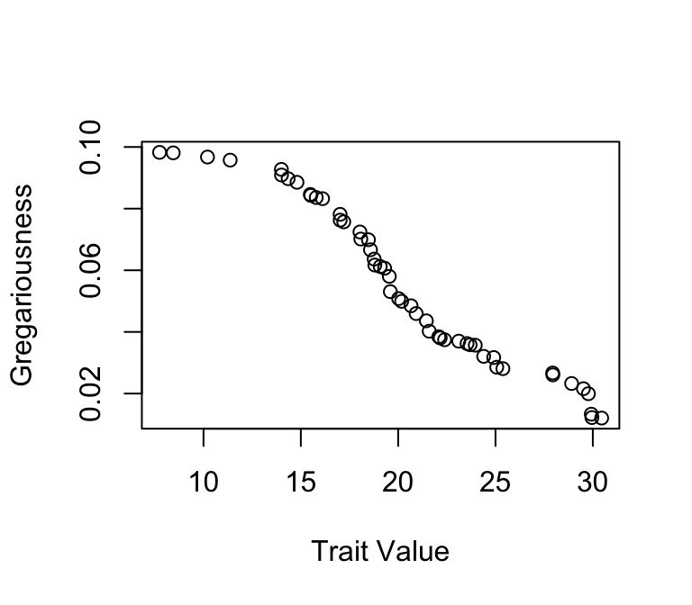
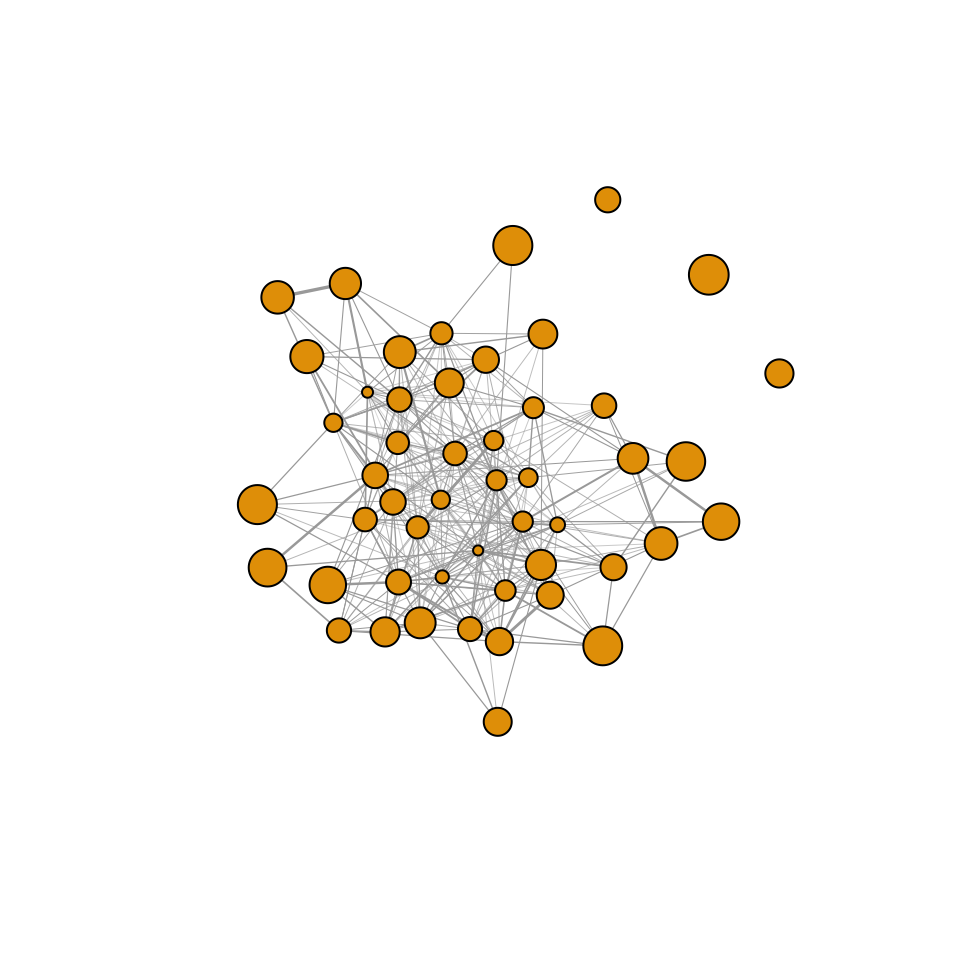
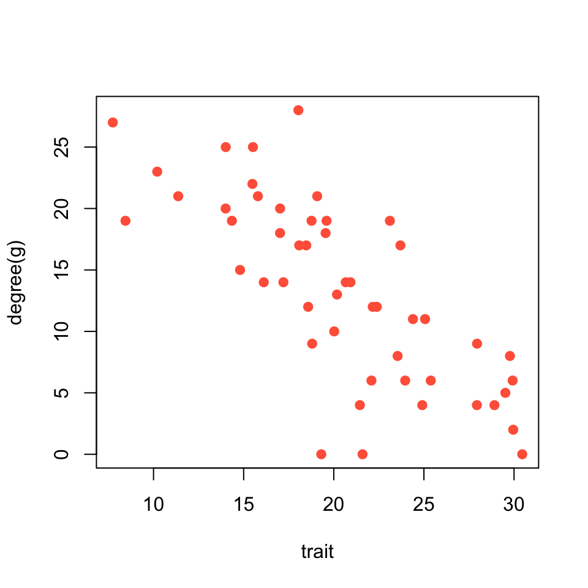

Here, we will simulate some social networks just to get a feel for how to create networks based on simple rules.
library(asnipe)
library(igraph)Let’s imagine a scenario in which individuals vary in how often they join groups (e.g., flocks). In addition, let’s imagine that individuals also vary in a trait (e.g., body size) that correlates with gregariousness–the tendency to join flocks. In this fictitious scenario, will we find correlation between the trait and centrality?
Let’s start by setting up a population of 50 individuals with a trait distributed normally (i.e., mean of 20 and standard deviation of 5). We can use the rnorm() function to generate these random values
Note that we are going to sort the sizes so that the largest individual is listed first.
set.seed(2)
n=50
trait=sort(rnorm(n,mean=20, sd=5), decreasing = T) Now, we’ll assign gregariousness to individuals. This will be defined as an individual’s probability of joining any given flock. This value, \(p\), will range from 0.01 to 0.2, and will follow a uniform distribution. Again, we will sort this vector. Then, the trait and gregariousness will be correlated
p=sort(runif(n, min=0.01, max=0.1)) #gregariousness
plot(trait, p, ylab="Gregariousness", xlab="Trait Value") #see that gregariousness and trait are correlated
Ok, now let’s simulate some flock observations. First, we’ll choose how many flocks to observe. Totally arbitrarily, let’s just say we’ll observe 100 flocks.
f=100Then, we’ll implement a simulation that will ultimately generate an individual-by-group matrix, whose dimensions will be 50 rows x 100 columns. The simulation will go as follows: For each cell, the probability that the individual (rows) is found in that flock (column) depends on that individual’s gregariousness value, \(p\)
We will first create a matrix of 0s, then fill in 1s using a loop:
ibg=matrix(0,nrow=n, ncol=f)
for(i in 1:n){
for (j in 1:f){
ibg[i,j]=sample(c(1,0), 1, prob=c(p[i], 1-p[i]))
}
}We will then make the network using the get_network() function from asnipe to create the adjacency matrix and the graph_from_adjacency_matrix() function from igraph.
adj=get_network(t(ibg), data_format="GBI", association_index="SRI")
g=graph_from_adjacency_matrix(adj, "undirected", weighted=T)Let’s plot the resulting network, with node size proportional to the individual’s trait value.
plot(g,vertex.size=trait/2, vertex.label="", edge.width=E(g)$weight*5)
Now, let’s plot the relationship between trait value and the individual’s degree centrality.
plot(trait, degree(g), pch=19, col="tomato")
As you can see, there is quite a strong correlation between trait and social position of the individual.
cor.test(trait, degree(g))##
## Pearson's product-moment correlation
##
## data: trait and degree(g)
## t = -8.0451, df = 48, p-value = 1.883e-10
## alternative hypothesis: true correlation is not equal to 0
## 95 percent confidence interval:
## -0.8556276 -0.6075387
## sample estimates:
## cor
## -0.7577462